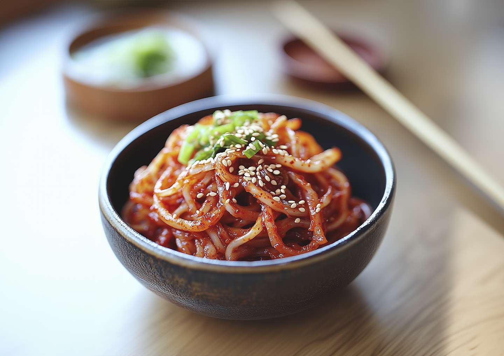

진미채
오징어채 100g

고추장 2 큰술

참기름 1 큰술

꿀(조청) 1큰술

깨

물
1. 양념을 만든다.
고추장과 참기름, 꿀을 함께 잘 섞어준다.
2. 오징어채와 잘 버무린다.
오징어채는 물에 3~4초 정도 담구었다가 채반으로 건져 물기를 빼고 먹기 좋은 크기로 자른다.
여기에 만들어둔 양념을 부어 골고루 버무려주고 깨를 뿌려 마무리한다.
달큰하고 중독적인 맛.